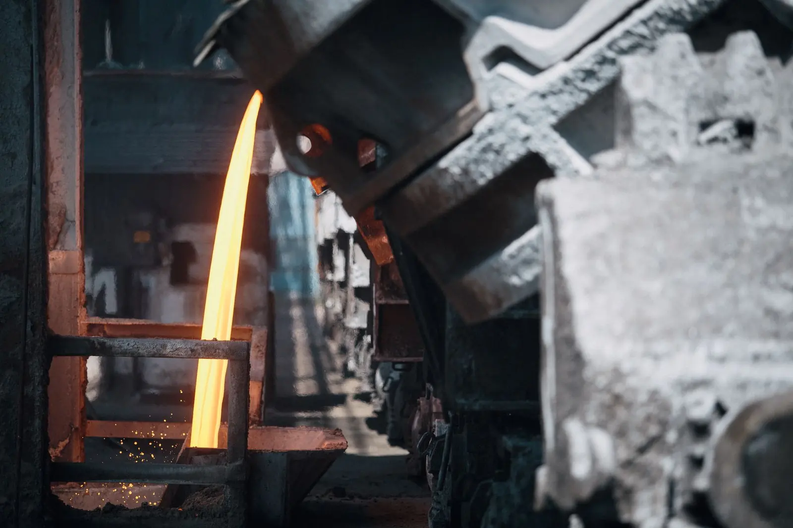
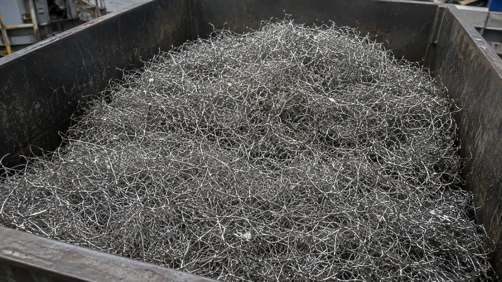
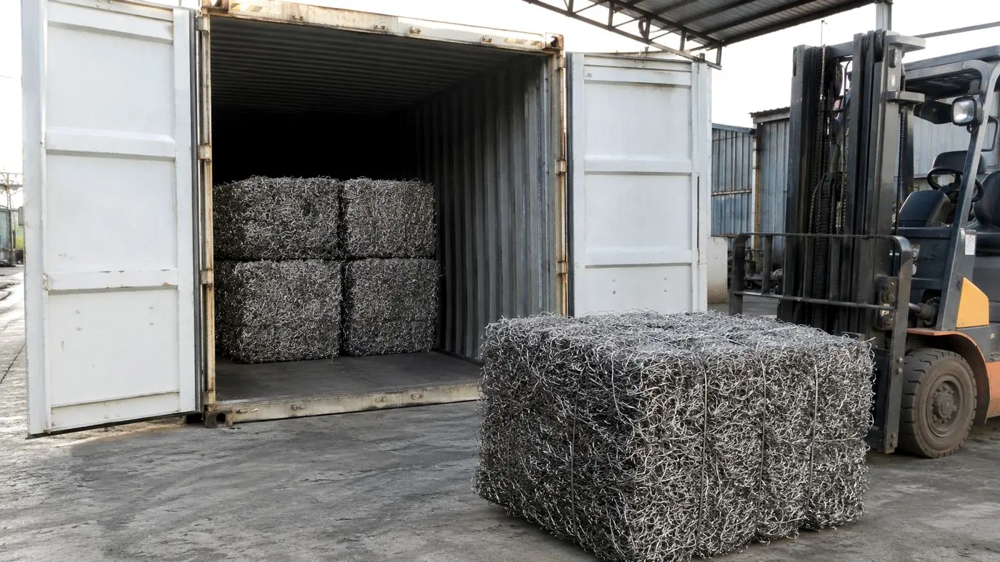

For buyers
One source. One grade. Every load documented.
Global Steel supplies processed spring steel, ferrous scrap and sorted non-ferrous metal from a single facility in Victoria — with a known origin, a consistent monthly volume and a load statement on every dispatch.
Who buys from us
Mills, foundries, traders, manufacturers
Steel mills
Single-grade high-carbon spring steel with around 99% ferrous content, loose or baled, 130–250 t a month.
Foundries
Consistent charge material from one process, supplied in the form that suits your handling.
Traders & exporters
Containers packed at our site, every bale counted, documents prepared for your forwarder.
Manufacturers
Recycled steel and non-ferrous inputs with the recycled-content basis documented for your own reporting.

What you get
The product
| Spring steel | High-tensile / high-carbon, ~99% ferrous, ~99% free of fabric and foam. Loose or baled. Full specification |
|---|---|
| Ferrous scrap | Sorted, sized where needed, contamination removed, baled |
| Non-ferrous | Copper (incl. granules from cable), aluminium, brass and stainless — segregated by type, sold by weight in lots |
| Volume | Spring steel 6–10 t a day, typically 130–250 t a month; non-ferrous accumulated to lots |
| Samples | Supplied before any commercial commitment |

What ships with it
The load statement
Every dispatch can carry a one-page statement: the metal, its source stream, the process it went through, weighed output, bale count, container number and the recycled-content basis. It is the same record Global Steel keeps for the partner who sent the metal — so the chain is unbroken from their weighbridge docket to your furnace.
- Origin: recovered and processed at one facility, North Geelong VIC
- Process: shred, magnetic, vibration, suction, electrostatic — stated per stream
- Weight, form, bale count and container number
- Recycled-content basis and the factor behind any carbon figure
Buyers also get their own side of Global Steel Connect: every dispatch, metals received by product, the recycled-content basis in words, and a supply statement for any period.
How to buy
Sample, confirm, schedule
Enquire
What you buy, where you are, roughly how much a month.
Sample
A physical sample to assess against your own requirements. We do not claim lab analysis we have not done.
Confirm
Form (loose or baled), volume, schedule and freight — road, rail or container.
Dispatch
Loads leave North Geelong on the agreed schedule, each with its statement.
Ready to assess the material?
Tell us your grade requirements, location and monthly volume. We will confirm availability and send a sample.